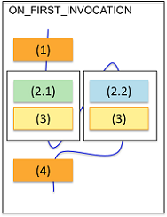

Test block level
In the test block level, FOR_SEMI_PARALLEL_TEST_BEGIN(SEMI_PARALLEL_CONFIG) provides the flow logic.
Before using FOR_SEMI_PARALLEL_TEST_BEGIN(SEMI_PARALLEL_CONFIG) in your code, you must have selected the Allow Parallel check-box and set Site Control to PARALLEL in the Site Control of the test suite property.
Workflow
The following code structure is an example with numbers to indicate the execution steps.
SEMI_PARALLEL_CONFIG semipara;
semipara.group(1).add(1).add(3);
semipara.group(2).add(2).add(4);
ON_FIRST_INVOCATION_BEGIN();
...(1)
FOR_SEMI_PARALLEL_TEST_BEGIN(semipara);
if(GET_CURRENT_SEMI_PARALLEL_GROUP_NUMBER() == 1)
...(2.1)
else
...(2.2)
...(3)
FOR_SEMI_PARALLEL_TEST_END();
...(4)
ON_FIRST_INVOCATION_END();
Note The
SEMI_PARALLEL_CONFIG setup for specific test actions
cannot be changed dynamically between multiple executions.The following figure shows the execution sequence of the code structure for the test block level.

SmartRDI code structure
The following code indicates the structure of SmartRDI code for semi-parallel tests in the test block level.
SEMI_PARALLEL_CONFIG semiparallel;
semiparallel.group(1).add(1).add(3);
semiparallel.group(2).add(2).add(4);
ON_FIRST_INVOCATION_BEGIN();
CONNECT();
rdi.dc().pin("PVI8").vForce(2).execute();
rdi.func().label("TestMode_Enable").execute();
rdi.wait(1 ms);
FOR_SEMI_PARALLEL_TEST_BEGIN(semiparallel);
RDI_BEGIN();
if (GET_CURRENT_SEMI_PARALLEL_GROUP_NUMBER() == 1)
rdi.pmux().pin("030102").selectOn().execute();
else
rdi.pmux().pin("030101").selectOn().execute();
rdi.dc("semi").pin("PVI8").vMeas().execute();
RDI_END();
FOR_SEMI_PARALLEL_TEST_END();
rdi.func().label("TestMode_Disable").execute();
rdi.dc().pin("PVI8").disconnect().execute();
ON_FIRST_INVOCATION_END();
rdi.id("semi").getValue();
Note When a FOR_SEMI_PARALLEL_BEGIN/FOR_SEMI_PARALLEL_END block is used, the code
execution is impacted by enabled sites. For some enabled sites, part of the code may not be
executed in the first run. By design, the code inside an RDI_BEGIN/RDI_END block is only
executed in the first run. Therefore, for the code that should have a test-suite-wide effect, do
not put them in an RDI_BEGIN/RDI_END block when a FOR_SEMI_PARALLEL_BEGIN/FOR_SEMI_PARALLEL_END
block is used.
The following examples demonstrates how to use setPinStatus() correctly in the code.
SEMI_PARALLEL_CONFIG semipara;
semipara.group(1).add(1).add(3);
semipara.group(2).add(2).add(4);
ON_FIRST_INVOCATION_BEGIN();
// Wrong code
RDI_BEGIN();
rdi.setPinStatus("A",1); // Set pin status commands inside the RDI_BEGIN/RDI_END block. If the 1st run only covers the site group 1, then when the site group 2 is enabled, setPinStatus() does not take effect.
RDI_END();
FOR_SEMI_PARALLEL_TEST_BEGIN(semipara);
if(GET_CURRENT_SEMI_PARALLEL_GROUP_NUMBER() == 1)
else
FOR_SEMI_PARALLEL_TEST_END();
#THEORETICAL_PATTERN_TIME=TRUE
#DUMMY_STATE_ON_INACTIVE_SITE=TRUE
SMV_DIGCAP_BITPERWORD_32 =TRUE
id="row_ROUTING_SETUP_FILE"
Correct code
SEMI_PARALLEL_CONFIG semipara;
semipara.group(1).add(1).add(3);
semipara.group(2).add(2).add(4);
ON_FIRST_INVOCATION_BEGIN();
rdi.setPinStatus("A",1); // set pin status commands outside the RDI_BEGIN/RDI_END block. No matter which site group is enabled, it will always take effect.
RDI_BEGIN();
...
RDI_END();
FOR_SEMI_PARALLEL_TEST_BEGIN(semipara);
if(GET_CURRENT_SEMI_PARALLEL_GROUP_NUMBER() == 1)
else
...
FOR_SEMI_PARALLEL_TEST_END();
ON_FIRST_INVOCATION_END();